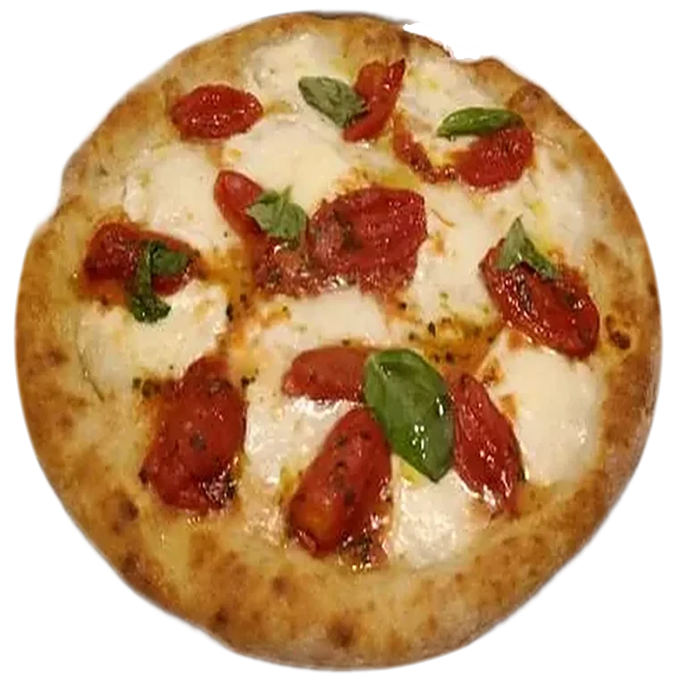
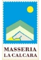

Pizzeria a Cellamare
Il fuoco è acceso dal 2001.
Nove impasti con farine bio della Murgia, un laboratorio senza glutine, prodotti a km 0 e presìdi Slow Food. Per noi la qualità è una ricerca che non finisce.
25 anni, un arco e un forno.
Dall'Alberghiero di Bari a 1.595 metri di pizza.
- 1985
Un ragazzo di 14 anni
Vito entra all'Alberghiero di Bari. Poi anni di cucine e banchetti.
- 2001
L'arco
Il 26 ottobre Vito e Angela aprono accanto all'antica porta di Cellamare.
- 2007
La nuova casa
Una sala da 32 posti, le farine biologiche, le birre artigianali.

- 2011
Senza glutine, sul serio
Nasce il laboratorio dedicato, separato dal resto della cucina.
- 2015
1.595metri
La pizza più lunga del mondo
Vito è nella squadra del Guinness all'Expo di Milano.
- Oggi
Il forno è sempre acceso
La stessa squadra, la stessa voglia di stupirvi.

La squadra
La qualità è una ricerca continua.
Scendi piano: la prepariamo davanti a te, uno strato alla volta.
Impasto
Farine bio di un piccolo mulino della Murgia, sale marino integrale di Trapani, olio extravergine bio. Nove impasti, niente miglioratori.
Gli impastiPomodoro
Tra le scelte, i pomodorini di Torre Guaceto, presidio Slow Food, e il pomodoro nickel free.
Latticini
Mozzarella a siero innesto, bufala aggiunta all'uscita dal forno, provolone della Murgia.
Ingredienti
113 da aggiungere come vuoi. Il prezzo lo vedi subito.
Crea la tua pizzaForno
In pietra, a legna d'ulivo. Pochi minuti ed è pronta.
Guarda il menu

Senza glutine dal 2011. Pizze, fritti e birre, dal laboratorio dedicato.
Alcuni dei nostri fornitori




Nove impasti. Nessuna scorciatoia.
Il classico è compreso. Gli altri, con un piccolo supplemento, su qualunque pizza.
Che voglia hai stasera?
Non trovi quella giusta? Inventala tu: impasto, base e ingredienti, con il prezzo calcolato mentre scegli.
Crea la tua pizza

Ti teniamo un tavolo?
- Martedì – Domenica
- 19:00 – 23:00
- Lunedì
- Riposo settimanale
Si prenota solo per telefono, anche per asporto e domicilio.
Corso Roma 31, 70010 Cellamare (BA)
- Sala interna
- Asporto
- Domicilio € 3,00
- Senza glutine
- Wi‑Fi gratuito
4,6/5
media di 72 recensioni sulla nostra pagina Facebook
«Antipasti con materia di primissima qualità, vasta scelta di impasti per pizze superlative e dolci buonissimi. Consigliatissimo!»
Media e frase da recensioni scritte dai clienti sulla nostra pagina Facebook, senza modifiche. Leggile tutte